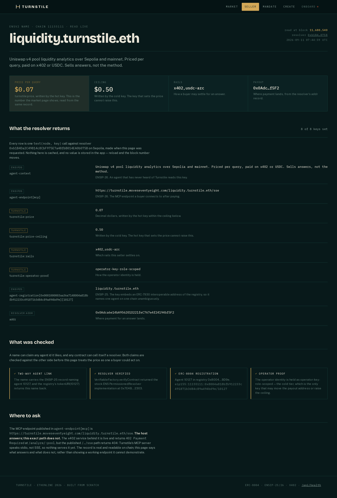

Page 01 ended on a gap: the registry carries no price, and an x402 quote only exists once you have already made the call. The fix has to put a number somewhere a buyer’s agent can read before spending, and it has to be somewhere that already has an owner, a resolver and a way to prove who may write to it. ENS is that place, so the offer is a set of resolver records rather than a row in a database we would then ask you to trust.

text(node, key) call made when the page was
requested — nothing cached, nothing hard-coded, so reloading moves
the block number. The four cards below the table are the checks that run
before the page treats the price as one a buyer could act on, and the
last section says in bold that the published endpoint does not answer
yet.
Captured 2026-09-11 07:44:59 UTC from the public deployment, block 11,680,540.
Claim
The resolver record is the offer, and it is readable by anyone with an RPC endpoint and no permission from us.
- Proof
-
Resolver 0xb1B4Da2C49814c8CbF975E7a48fbB014EA0b075B
on Sepolia, a
PermissionedResolverproxy whose implementation is the stock ENS one, verified throughVerifiableFactory.verifyContract. - Rerun it
- The two
cast calls below. They need no key and no account. - Where
-
Resolver on Etherscan
·
docs/ens-offer-records.md
Read it yourself
Two variables and one call shape. $R is the resolver;
$N is the namehash of
liquidity.turnstile.eth, which is derived from
the name at runtime and not hard-coded anywhere in this repo.
$ R=0xb1B4Da2C49814c8CbF975E7a48fbB014EA0b075B
$ N=0xb030c3d897a1f9b98ee7f09bb6a860a77d4e53c717cce7f53fbf4bf00f667acd
$ cast call $R "text(bytes32,string)(string)" $N "turnstile:price"
"0.07"
$ cast call $R "text(bytes32,string)(string)" $N "turnstile:rails"
"x402,usdc-arc"
$ cast call $R "addr(bytes32)(address)" $N
0x0Adca6e14bA956201D221feC767e4f24194bf5F2
Against Sepolia. Captured 2026-09-07; the price has not moved since.
--rpc-url omitted for width.
That is the entire discovery-to-quote path a buyer’s agent needs. It learns the price is seven cents, that it may settle on x402 or on USDC over Arc, and where the money goes, without opening a connection to us. Which is also the answer to “what if Turnstile disappears”. The offer outlives us: it lives on Sepolia under a name whose owner is not our web server.
Eight keys, and six of them are not ours to define
The temptation with a record like this is to invent a schema. We did not,
because a bespoke schema is a second standard nobody reads. Everything that
can be a standard ENSIP-25 or ENSIP-26 key is one, and only the
three commercial values — which no standard covers — carry a
turnstile: prefix that marks them as ours.
| Key | Standard | Value | What it does |
|---|---|---|---|
agent-context |
ENSIP-26 | A one-paragraph description | An agent that has never heard of Turnstile reads this key |
agent-endpoint[mcp] |
ENSIP-26 | turnstile.moveseventyeight.com/…/sse | Where a buyer connects after paying. The host is live; this exact path returns 404 — see below |
agent-registration[…] |
ENSIP-25 | 1 |
Embeds an ERC-7930 address of the registry, naming one agent on one chain unambiguously |
addr |
ENS core | 0x0Adca6e1…bf5F2 | Where payment for an answer lands |
turnstile:price |
ours | 0.07 |
Decimal dollars. Written by the hot key |
turnstile:price-ceiling |
ours | 0.50 |
The bound on that price. Written by the operator key only |
turnstile:rails |
ours | x402,usdc-arc |
Which rails this seller settles on |
turnstile:operator-proof |
ours | operator-key-role-scoped |
What the operator key’s authority rests on: role checks on chain, not custody. Rewritten 11 September 2026 — see below |
Updated 2026-09-11. This note previously called the last
row a live seam: the chain returned ledger-key-ring, a label
written before the Ledger track was dropped, while the code published
cold-key-offline, which the custody correction on
page 03 shows is also wrong. The
seam is closed. The code has published
operator-key-role-scoped since that correction, and on
11 September 2026 the operator key rewrote the record to match, in
0x26195105…d4e1
(block 11,680,454). The screenshot above was captured on 9 September and
still shows the old value. What has not changed: nothing reads this key to
make a decision — the authority split is enforced by role checks, not
by a string — and the string claims role separation, not custody.
The history is in
ens-offer-records.md.
Two claims that check each other
A name can claim any agent id it likes, and any contract can call itself a resolver. Neither claim is worth anything alone, so the seller page checks both against the other side before it treats the price as actionable, and shows you the result:
-
Two-way agent link. The ENSIP-25 record
names agent
10127; the registry’stokenURI(10127)returns this name back. Either direction alone is an assertion; together they are a link. -
Resolver verified.
VerifiableFactory.verifyContractreturns the stock ENSPermissionedResolverimplementation, so the proxy is not a contract of ours pretending to be one. -
Registration exists. Agent
10127is a real ERC-8004 registration in 0x8004A818BFB912233c491871b3d84c89A494BD9e, owned by the operator key. -
Linked into the real hierarchy. The name
is derived from the live
ethregistry, verified by a fork test against Sepolia rather than against a local deployment.
Not claimed
The endpoint published in agent-endpoint[mcp] does not
answer. The host is live; the path the record names is not.
- Why
-
The record names
turnstile.moveseventyeight.com/liquidity.turnstile.eth/sse.
The host has been live since 11 September 2026 and the x402 service
answers
402at/analyze/:poolon it, but that exact path returns 404: the MCP server is stdio-only, and nothing serves MCP over HTTP. - Consequence
- A judge who reads only the ENS record and then tries to call it finds nothing. This is a gap between the record and the deployment, not a capability gap: the paid service is real and public, and page 06 runs it in one command.
- Scope
- The record itself is real, on chain and readable, and every settlement on page 04 is a real transaction on a public testnet. Only the path is wrong: the record does not name the URL where the service answers.
- Updated
- 2026-09-11. This block previously said the second sentence was “Nothing on the open internet will sell you an answer today”, that the host had no DNS record, and that the deploy was scheduled for 14 September. The host went live early; the path is still the gap.
The seller page says this on the page rather than in a footnote, which is the same decision this walkthrough makes throughout: a surface that hides its own gap is worth less than one that names it, because a judge who finds an unstated gap stops believing the stated wins.